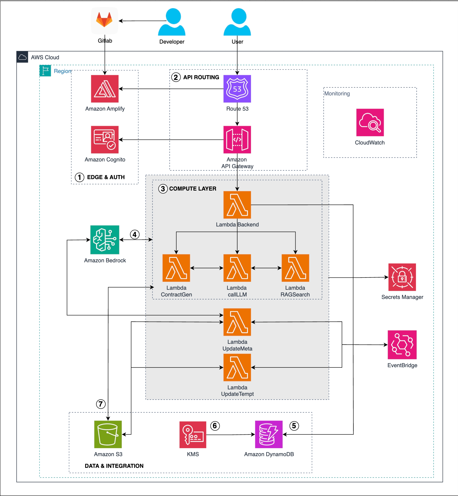

Bản đề xuất
Nền tảng Smart Contract Assistant - AGREEME
Giải pháp AWS Serverless cho việc rà soát hợp đồng cá nhân
TEEJ - AGREEME
1. Tóm tắt
Nền tảng Smart Contract Assistant - AGREEME là một dịch vụ web dành cho cá nhân và các nhóm người dùng nhỏ (freelancer, chủ doanh nghiệp nhỏ, nhân viên văn phòng) làm việc với hợp đồng hằng ngày nhưng không có chuyên môn pháp lý sâu. Giải pháp sử dụng Amazon Bedrock và kiến trúc AWS serverless hoàn toàn để phân tích hợp đồng, làm nổi bật rủi ro, gợi ý chỉnh sửa điều khoản, và tạo tóm tắt cũng như mẫu hợp đồng mới.
Được xây dựng trên AWS Amplify, Lambda, API Gateway, DynamoDB, S3, Cognito, EventBridge và CloudWatch, nền tảng cung cấp khả năng rà soát hợp đồng bằng AI với độ trễ thấp, chi phí thấp và bảo mật cao, được tối ưu cho người dùng đơn lẻ hoặc các nhóm nhỏ mà không cần tính năng phức tạp như hệ thống doanh nghiệp.
2. Vấn đề và giải pháp
Vấn đề
- Hợp đồng thường dài, phức tạp và khó hiểu đối với người không có chuyên môn về luật pháp.
- Việc thuê tư vấn pháp lý cho mỗi hợp đồng tốn kém và không phù hợp để mở rộng cho các cá nhân.
- Hiện tại vẫn chưa có công cụ tự phục vụ, đơn giản, tập trung vào việc rà soát hợp đồng nhanh và chính xác cho mục đích cá nhân hoặc các doanh nghiệp nhỏ.
- Người dùng cá nhân hoặc các doanh nghiệp nhỏ không có nhu cầu sử dụng các hệ thống phức tạp hay nền tảng quản lý tài liệu nặng nề; họ chỉ cần kiểm tra rủi ro nhanh với các chỉ dẫn rõ ràng.
Giải pháp
Nền tảng AGREEME cung cấp một web app sử dụng mô hình AI, nơi người dùng có thể upload file hợp đồng (PDF/DOCX) và nhận được:
- Giải thích về các điều khoản phức tạp bằng ngôn ngữ đơn giản, dễ hiểu.
- Ngữ cảnh pháp lý với việc đánh dấu các điều khoản có lợi/không có lợi.
- Phát hiện rủi ro và cảnh báo (điều khoản mất cân bằng, nghĩa vụ ẩn, vấn đề pháp lý tiềm ẩn).
- Gợi ý chỉnh sửa và câu chữ thay thế ở cấp độ điều khoản để phục vụ đàm phán.
- Bản tóm tắt điều hành (executive summary) tự động cho người dùng bận rộn.
- Khả năng tạo hợp đồng đơn giản từ mẫu (thuê nhà, mua bán, dịch vụ, v.v.) với các điều chỉnh dựa trên tình huống thực tế được AI hỗ trợ.
Tất cả được vận hành trên kiến trúc AWS Serverless:
- Frontend trên AWS Amplify với Hosting, CDN và WAF tích hợp.
- APIs & compute thông qua Amazon API Gateway và AWS Lambda.
- AI sử dụng Amazon Bedrock (GenAI/LLM + embeddings/RAG).
- Lưu trữ & metadata bằng Amazon S3 và DynamoDB, được mã hóa bởi KMS.
- Định danh & bảo mật với Amazon Cognito, AWS WAF, IAM và KMS.
- Giám sát & sự kiện thông qua Amazon CloudWatch và EventBridge.
Lợi ích và hoàn vốn đầu tư
-
Tác động kinh doanh
- Giảm thời gian đọc/hiểu hợp đồng ít nhất ≥ 70%.
- Giảm chi phí tư vấn pháp lý ít nhất ≥ 50% bằng cách thay thế bước rà soát ban đầu bằng AI.
- Tăng sự tự tin của người dùng khi ký kết và đàm phán hợp đồng.
-
Hiệu năng kỹ thuật
- Độ chính xác phân tích hợp đồng ≥ 85% (theo kiểm thử nội bộ và phản hồi người dùng).
- Thời gian phản hồi ≤ 8 giây sau khi upload.
- Tỷ lệ uptime hệ thống ≥ 99.9% cho người dùng cá nhân.
-
Hiệu quả chi phí
- Chi phí hạ tầng AWS ước tính: $27.91/tháng → $334.92/12 tháng.
- Nỗ lực triển khai: tổng 592 giờ, ≈ $637.12 cho chi phí nhân sự (Solution Architect + Software Engineer + AI Engineer).
3. Kiến trúc giải pháp
Nền tảng được triển khai dưới dạng kiến trúc serverless hoàn toàn, bảo mật và có khả năng mở rộng, được tối ưu cho xử lý tài liệu bằng GenAI và phân tích hợp đồng dựa trên RAG.

Kiến trúc tổng thể
-
Lớp Entry & Web
- Amazon Route 53 cho DNS và tên miền thân thiện.
- AWS Amplify Hosting cho frontend React/Amplify với CDN và WAF tích hợp.
-
Định danh & Truy cập
- Amazon Cognito cho user pool và xác thực (JWT).
- API Gateway xác thực token Cognito trước khi gọi Lambda.
- IAM roles đảm bảo nguyên tắc phân quyền tối thiểu cho S3, DynamoDB, Bedrock, KMS và EventBridge.
-
Tầng Backend Compute
- Core API Lambda để điều phối các yêu cầu từ API Gateway.
- Các Lambda chuyên biệt cho:
- Tạo hợp đồng (ContractGen).
- Gọi LLM tổng quát (tóm tắt, phân loại, chuyển đổi).
- Tìm kiếm RAG (truy xuất dựa trên embedding và tra cứu tri thức).
- Cập nhật metadata (DynamoDB).
- Quản lý template.
-
Tầng AI & LLM
- Amazon Bedrock dùng cho:
- Phân tích hợp đồng (tóm tắt, rủi ro, phân loại điều khoản).
- Embeddings và RAG trên kho văn bản pháp luật và các template.
- Tạo hợp đồng và gợi ý viết lại điều khoản.
-
Dữ liệu & Lưu trữ
- Amazon S3 lưu hợp đồng người dùng upload, tài liệu sinh ra và các mẫu hợp đồng, văn bản pháp luật thô.
- Amazon DynamoDB lưu metadata, template, và chỉ mục RAG.
- AWS KMS mã hóa dữ liệu lưu trữ cho S3, DynamoDB và secrets.
-
Sự kiện & Tự động hóa
- Amazon EventBridge cho các workflow bất đồng bộ (xử lý nền, cập nhật metadata, đồng bộ template).
-
Giám sát & Vận hành
- Amazon CloudWatch cho logs, metrics và cảnh báo trên Lambda, API Gateway, Amplify và tương tác với Bedrock.
Dịch vụ AWS sử dụng
-
Application Stack
- AWS Amplify (hosting frontend, CI/CD, tích hợp WAF).
- React / Amplify Framework (UI).
- Amazon API Gateway (quản lý API).
- AWS Lambda (backend microservices).
- Amazon Bedrock (suy luận LLM, embeddings, RAG).
- Amazon DynamoDB (metadata và kho tri thức).
- Amazon S3 (lưu trữ tài liệu).
- AWS KMS (mã hóa).
- Amazon EventBridge (định tuyến sự kiện).
-
Monitoring & DevOps
- Amazon CloudWatch (quan sát hệ thống, cảnh báo).
- GitLab + Amplify CI/CD (quản lý mã nguồn và triển khai tự động).
-
Security
- AWS WAF (thông qua Amplify).
- AWS IAM (kiểm soát truy cập).
- Amazon Cognito (xác thực).
Thiết kế thành phần
- Web Interface: Ứng dụng React host trên Amplify để upload, xem kết quả phân tích, lịch sử và tạo hợp đồng.
- API Layer: API Gateway + Lambda để xử lý upload, điều phối Bedrock và trả kết quả.
- AI Logic: Luồng xử lý sử dụng Bedrock để phân tích điều khoản, chấm điểm rủi ro, tóm tắt và tạo hợp đồng dựa trên template.
- Data Layer: S3 lưu hợp đồng thô/đã sinh; DynamoDB lưu metadata, template và chỉ mục RAG.
- Security & Compliance: Xác thực dựa trên Cognito, mã hóa KMS, bảo vệ WAF và chính sách IAM chặt chẽ.
4. Triển khai kỹ thuật
Các giai đoạn triển khai
-
Phase 1 – Assessment (Tuần 1–2)
- Thu thập yêu cầu kinh doanh và yêu cầu người dùng.
- Xác định các use case AI (phân tích, phát hiện rủi ro, gợi ý).
- Thiết kế kiến trúc tổng thể và baseline bảo mật.
-
Phase 2 – Setup Base Infrastructure (Tuần 3–4)
- Cấu hình dự án Amplify, IAM roles, S3, DynamoDB, KMS.
- Bật logging và monitoring bằng CloudWatch.
-
Phase 3 – Frontend & Authentication (Tuần 5–6)
- Triển khai frontend qua Amplify.
- Tích hợp Cognito và WAF do Amplify quản lý.
- Xây dựng chức năng upload hợp đồng và giao diện dashboard cơ bản.
-
Phase 4 – Backend Core & AI Integration (Tuần 7–8)
- Xây dựng Lambda APIs và tích hợp Bedrock.
- Parse hợp đồng, lưu kết quả vào DynamoDB và trả lại phân tích cho UI.
-
Phase 5 – Advanced AI Logic & Optimization (Tuần 9–10)
- Xây dựng logic phát hiện rủi ro, gợi ý đàm phán và tìm kiếm RAG.
- Cải thiện UX, tối ưu độ trễ và chi phí.
-
Phase 6 – Testing, Go-Live & Handover (Tuần 11–12)
- Viết unit/integration test, kiểm thử bảo mật và hiệu năng.
- Triển khai production và chuyển giao kiến thức.
Yêu cầu kỹ thuật
- Thành thạo AWS Amplify, Lambda, API Gateway, Cognito, S3, DynamoDB, EventBridge, CloudWatch.
- Có quyền truy cập Amazon Bedrock (Claude, Cohere, v.v.) để phân tích văn bản pháp lý.
- Thư viện xử lý file để trích xuất nội dung PDF/DOCX.
- Chính sách xử lý dữ liệu và quyền riêng tư rõ ràng cho tài liệu hợp đồng nhạy cảm.
5. Timeline & Milestones
-
Tổng thời gian: 12 tuần (6 sprint, mỗi sprint 2 tuần).
-
Các sprint:
- Sprint 1–2: Assessment & hạ tầng nền tảng.
- Sprint 3–4: Frontend + authentication.
- Sprint 5–6: Backend core, tích hợp AI, logic AI nâng cao và tối ưu.
-
Áp dụng Agile liên tục với planning, review và retrospective mỗi sprint.
-
Chuyển giao kiến thức ở các sprint cuối (kiến trúc, vận hành, CloudWatch, best practices về prompt).
6. Ước tính ngân sách
Chi phí hạ tầng (theo tháng)
Infrastructure Costs
| Service |
Monthly Cost (USD) |
12-Month Cost (USD) |
| Amazon S3 |
$1.80 |
$21.60 |
| Amazon API Gateway |
$0.05 |
$0.60 |
| Amazon DynamoDB |
$4.02 |
$48.24 |
| AWS Secrets Manager |
$1.08 |
$12.96 |
| Amazon Route 53 |
$2.04 |
$24.48 |
| Amazon Cognito |
$1.00 |
$12.00 |
| AWS Amplify |
$16.25 |
$195.00 |
| Amazon CloudWatch |
$0.53 |
$6.36 |
| Amazon Bedrock |
$1.13 |
$13.56 |
| Amazon Lambda |
$0.01 |
$0.12 |
| Total |
$27.91/month |
$334.92/12 months |
AWS Pricing Calculator
Implementation Team Cost
| Role |
Hourly Rate (USD) |
| Solution Architect |
$2.30/hour |
| Software Engineer |
$0.70/hour |
| AI Engineer |
$0.70/hour |
Total estimated project effort: 592 hours → ≈ $637.12 USD.
7. Đánh giá rủi ro
Rủi ro chính
- AI accuracy risk: Mô hình có thể diễn giải sai một số điều khoản pháp lý.
- File quality risk: File scan chất lượng thấp hoặc PDF phức tạp có thể làm hỏng OCR/parsing.
- Sensitive data risk: Người dùng có thể upload hợp đồng có mức độ bí mật rất cao.
- Cloud dependency risk: Sự cố trên Bedrock hoặc Amplify sẽ ảnh hưởng tới khả dụng hệ thống.
- Usage & cost risk: Khối lượng gọi AI lớn sẽ làm tăng chi phí vận hành.
Chiến lược giảm thiểu
- Kiểm thử nội bộ kỹ lưỡng và cung cấp cảnh báo rõ ràng về giới hạn của AI.
- Xây dựng pipeline xử lý file vững chắc với bước kiểm tra và hướng dẫn người dùng.
- Mã hóa mạnh (KMS), giới hạn thời gian lưu trữ và kiểm soát truy cập chặt chẽ.
- Giám sát và cảnh báo qua CloudWatch, kèm theo runbook xử lý sự cố.
- Tối ưu prompt, giới hạn request và thiết lập budget alert để kiểm soát chi phí AI.
8. Kết quả kỳ vọng
Kết quả kỹ thuật
- Trợ lý AI dạng serverless, sẵn sàng production cho cá nhân/nhóm nhỏ.
- Hiệu năng ổn định với thời gian phân tích ≤ 8 giây và uptime ≥ 99.9%.
- Xử lý tài liệu nhạy cảm một cách an toàn với mã hóa và phân quyền tối thiểu.
Kết quả kinh doanh
- Tăng tốc độ hiểu hợp đồng và giảm rủi ro pháp lý cho người không chuyên.
- Giảm đáng kể chi phí tư vấn pháp lý và thời gian rà soát thủ công.
- Nền tảng SaaS có khả năng mở rộng, có thể phát triển thêm tính năng hoặc nhóm người dùng mới trong các giai đoạn sau.
Proposal chi tiết
Proposal chi tiết